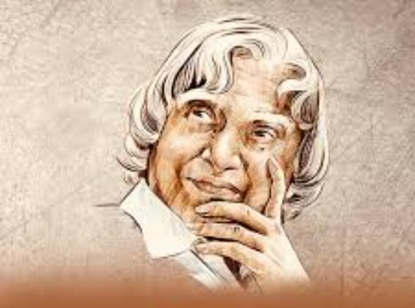

Biography
Dr. A.P.J. Abdul Kalam was one of India's most respected scientists and leader. He was born on 15 October 1931 in Rameswaram, Tamil Nadu.
He made significant contributions to India's space and defence programs and became popularly known as the "Missile Man of India."
Dr. Kalam served as the 11th President of India from 2002 to 2007. He inspired millions of young people to dream big and work hard to achieve their goals.
Major Achievements
- Played an important role in India's missile development programs.
- Contributed to India's civilian space program.
- Known as the "Missile Man of India."
- Served as the 11th President of India from 2002 to 2007.
- Received the Bharat Ratna, India's highest civilian award.
- Inspired millions of students through his speeches and books.
Timeline
1931
Born on 15 October in Rameswaram, Tamil Nadu.
1960
Joined the Defence Research and Development Organisation (DRDO).
1969
Joined the Indian Space Research Organisation (ISRO).
1997
Received the Bharat Ratna for his contributions to Science and Society.
2002
Became the 11th President of India.
2015
Passed away while delivering a lecture to students.
"Dream, dream, dream, Dreams transform into thoughts and thoughts result in action."
--Dr. A.P.J. Abdul Kalam